Experience.
Three jobs, none of them glamorous, all of them about doing the same thing correctly a large number of times.
DAEYANG Co., Ltd.
9 months
Daegu, South Korea
DAEYANG is a corporate R&D institute developing thermoelectric materials and modules for energy and environmental applications. I worked across most of the line, and that turned out to matter. A wedge that plates unevenly looks like nothing at the bath. Three weeks later it looks like a module that reads wrong.
The line starts with Bi, Te, and Sb feedstock, which is ground, mixed by ball milling, and pressed under heat into a cylindrical pellet. The pellet is sliced into coins, and each coin is cut into quarters or eighths called sector wedges. Wedges are degreased, plated, diced into cubes, and cleaned again. Only then are they legs, ready for SMT.
Surface prep & plating
Most of my time went into surface preparation and the plating bath. Before plating, the wedges were degreased, mainly by sonication in IPA, so residue from cutting and handling wouldn't end up under the coating. The diced legs got the same cleaning afterward.
The plating itself was medium-phosphorus (6–8% P) electroless nickel on bismuth telluride, with pH monitoring and solution adjustment through every run and samples held in process fixtures. A drifting bath doesn't fail loudly. It just leaves an uneven coating on a wedge that later becomes many legs, so one bad wedge is never just one bad part.
How the wedges sat in the bath was part of the same problem. On my own initiative I drew up a custom titanium holding jig, with full drawings and specifications, and brought it to a senior researcher. Scheduling, fabricator sourcing, and minimum order quantities kept it from being built. Designing a fixture around a specific failure is still the part of that job I think about most.
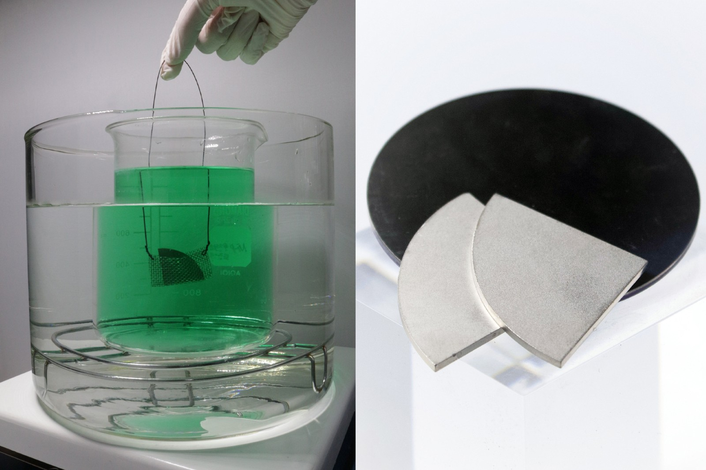
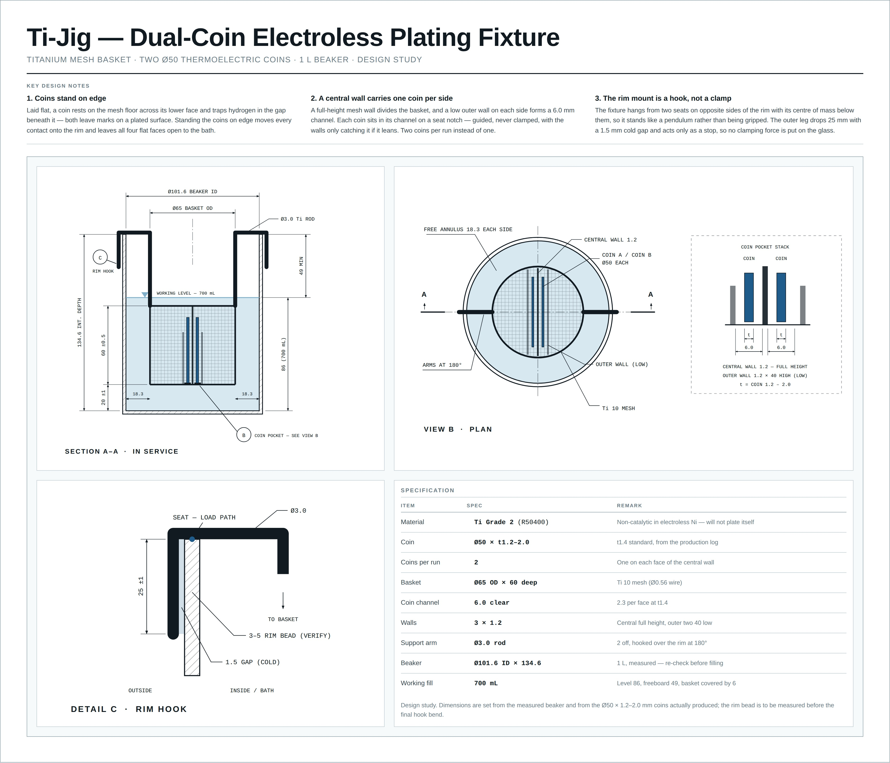
Inspection & incoming QC
After dicing I ran dimensional inspection and defect classification on the legs under digital microscopy, checking critical dimensions against design tolerances and sorting defects by type (machining error, burring, asymmetry).
Not all the legs were ours, either. DAEYANG runs joint national R&D with the Korea Electrotechnology Research Institute (KERI), and on one commissioned build that used KERI's own legs, I separately ran incoming inspection and tray loading. Whatever the source, nonconforming legs came out before SMT, because one bad leg means a bad module.
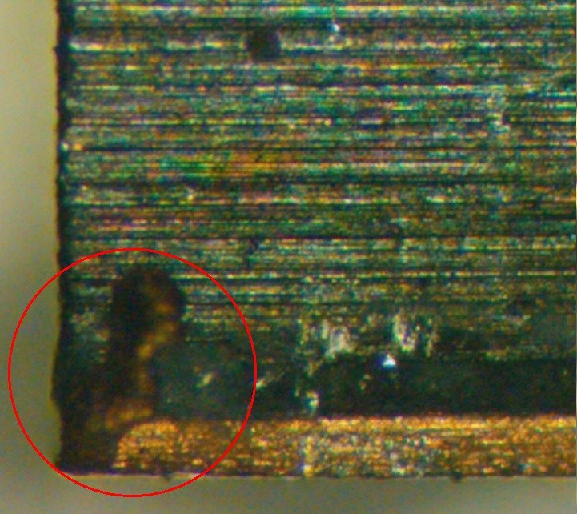
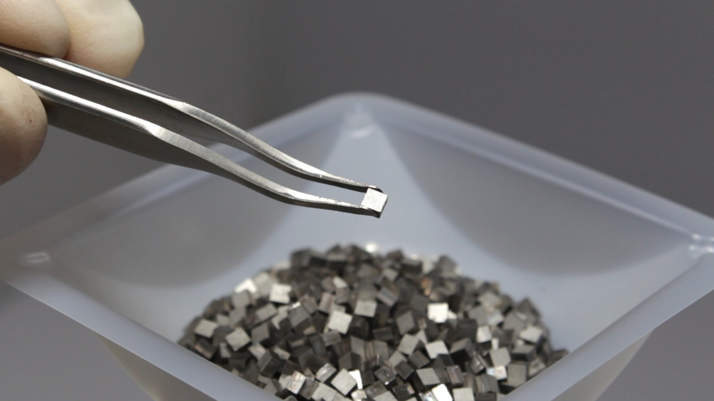
Module assembly & test
On the assembly side I supported senior engineers building thermoelectric modules, mostly the 8×8 format with 128 legs (64 N-type, 64 P-type) along with 64-leg and other formats. I prepped solder paste, set up substrate mounting frames, loaded substrates for automated paste printing and leg placement, soldered positive and negative lead wires to the electrodes after reflow, and sourced lead-free, high-temperature paste. Weekly output ran 20 to 30 modules, scaling past 50 during government R&D cycles.
At the end of the line I ran final electrical inspection, measuring resistance and voltage against spec, logging results in Excel for traceability, and flagging nonconforming units for retest. Under senior researcher guidance I also collected generator performance data across five cooling configurations (forced and natural air, forced and natural water, and antifreeze).
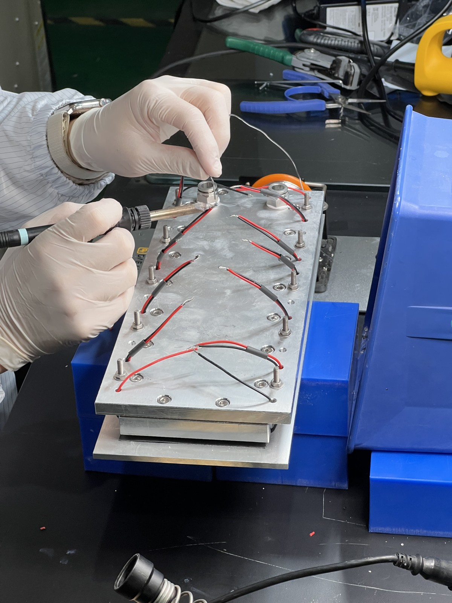
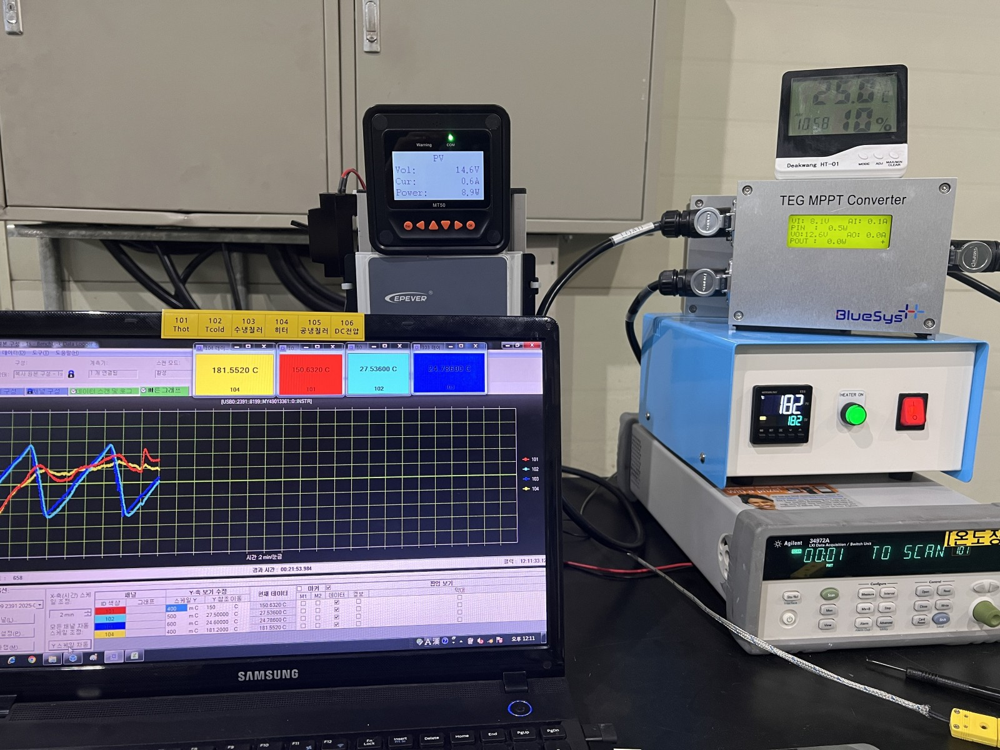
Republic of Korea Auxiliary Police
18 months
South Korea
Military service is compulsory in South Korea. I served mine in the auxiliary police in Pohang, under the Ministry of National Defense and the Korean National Police Agency, and finished as a sergeant.
For 7 months of the 18 I led a 12-officer squad through high-pressure field deployments, mostly protest response and missing person searches across mountainous and coastal terrain. We found 3 missing people and brought them back safely, which earned an official commendation.
The rest was public safety work. I held police lines during civil disturbances, trained in joint readiness drills with the ROK Marine Corps (including chemical threat response), drove personnel and equipment, and staffed station entry, where my job was pointing civilians to the right department rather than taking their reports myself.
A procedure on paper is worth very little. A squad that has actually rehearsed it is worth a great deal. I still think about that difference whenever I read a process document.
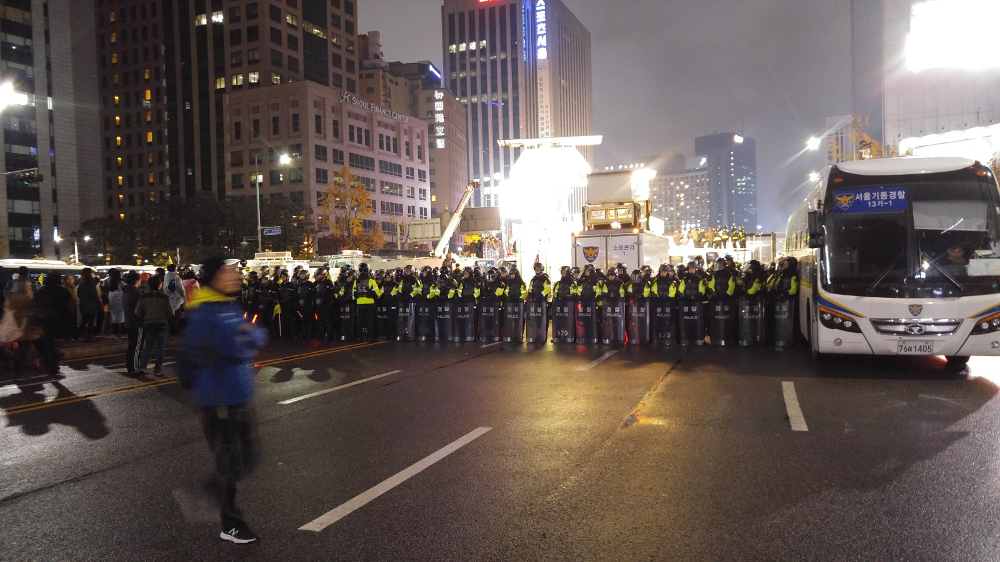
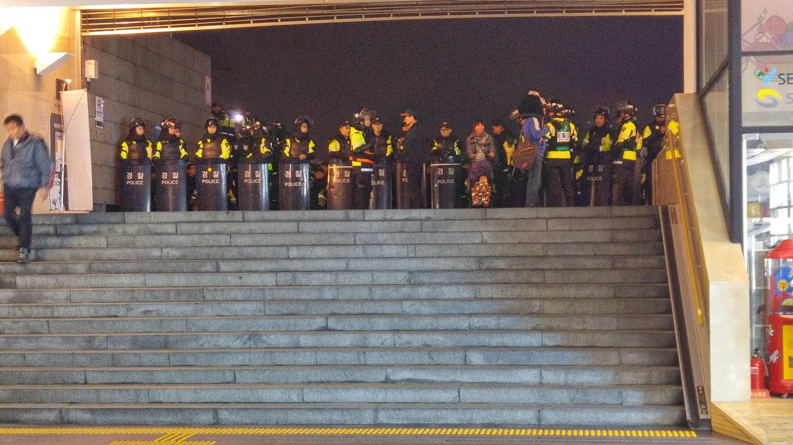
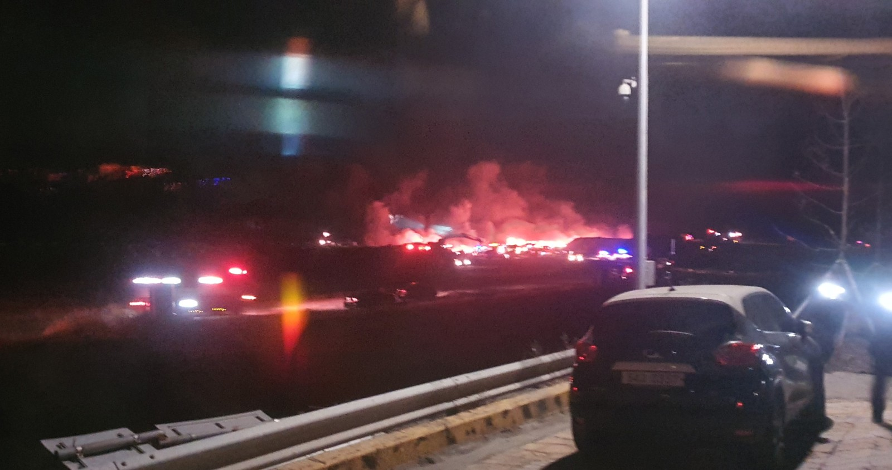
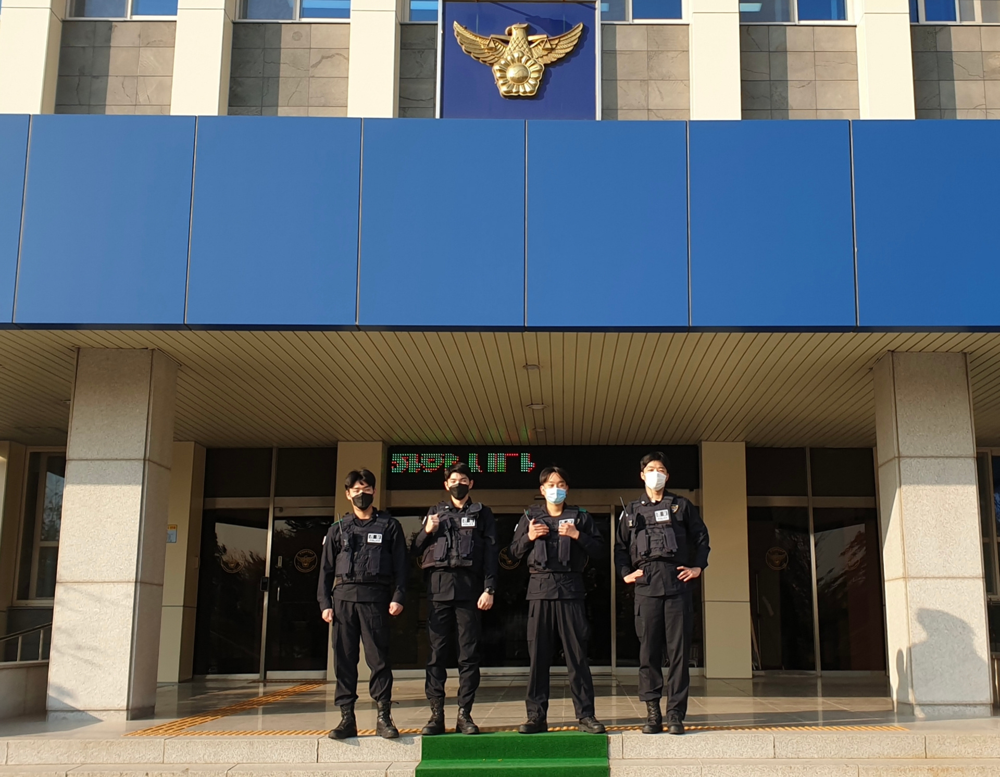
University of Wisconsin–Madison
3 months
Madison, WI
The summer after my first year I worked custodial services on campus during residence hall move-out turnover. That meant emptying, cleaning, and resetting whole buildings before summer program participants and returning students arrived.
Assigned buildings, a fixed daily schedule, a crew. I include it because it's the plainest proof I have of something employers care about. I've done repetitive physical work to a standard, on a deadline, with other people counting on my share of it.
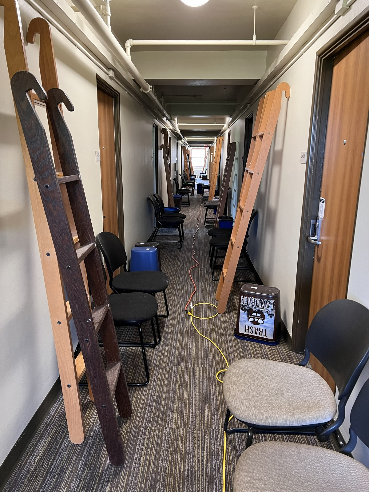
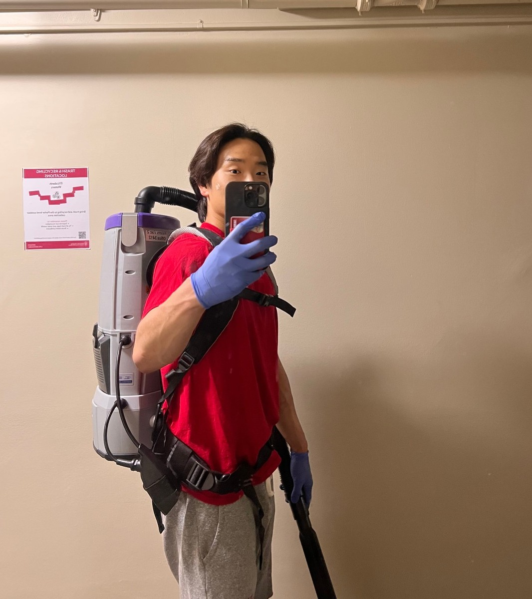
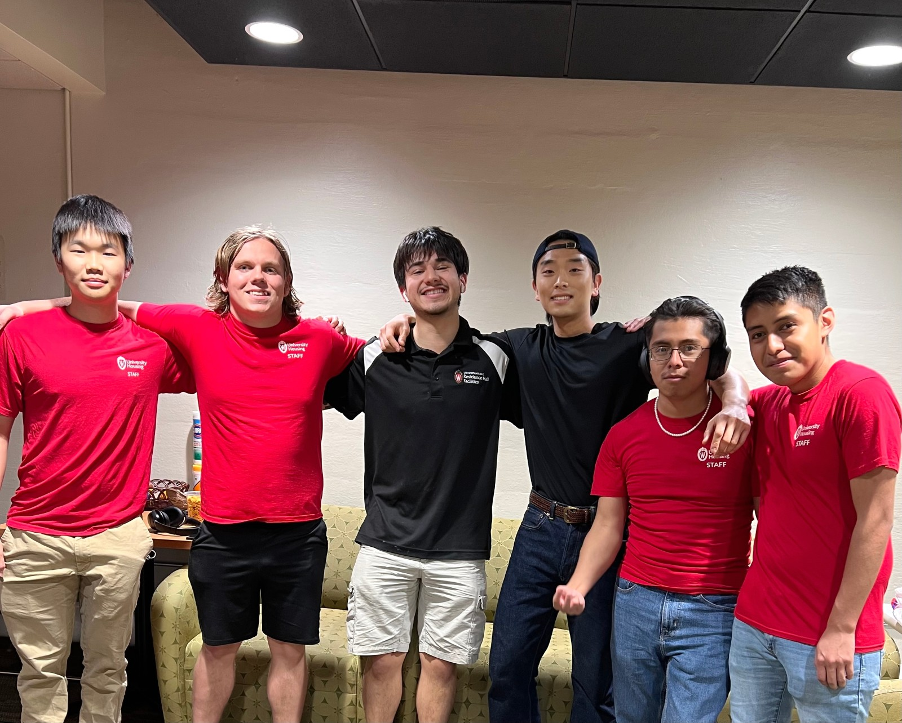